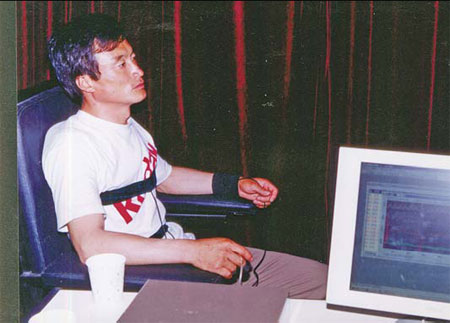

Apple introduit le Power
Mac (architecture RISC Power PC), compatible et 4 fois plus puissant.
La rapidité du Pentium ayant rendu caduques les anciens bus micro (ISA
et VESA), Intel lance le bus PCI.
Novell achète la société
WordPerfect et le tableur Quattro Pro de Borland.
L'IETF choisit la proposition SIPP
(IPV6, adresses sur 128 bits) pour IPng.
Bull cède à Wang, pour 160 M$, une grosse part de ses activités
américaines : intégration de systèmes, maintenance et GED. Et prend en contrepartie 4,9 % de l'américain.
L'IETF publie la RFC 1752 : Recommandations for the IP Next Generation Protocol.
Zhaoghuo Fourni à China Daily

A Wuchang (province de Heilongjiang, Chine), Meng Zhaoghuo (fermier) travaille à
l'extérieur de la ville, lorqu'il voit un flash métallique sur un flanc de montagne. Il va voir de plus près,
pensant au crash d'un hélicoptère, mais perd conscience. Cette nuit-là racontera-t-il, une humanoïde le visita.
Mesurant 3 m, dotée de 12 doigts et ayant les poils de ses jambes tressés, elle aurait fait l'amour avec lui,
pendant 40 mn, en lévitation. De retour, il apparaît totalement troublé et incapable de communiquer avec qui que ce
soit. Je ne croyais pas aux extraterrestres jusqu'à ce que je les rencontre, dira-t-il. Voir c'est croire.
Nous ne pouvons pas expliquer les ovnis et les extraterrestres parce que notre technologie n'est pas assez avancée.
Mais ça ne veut pas dire que ces choses n'existent pas. Zhaoghuo déclarera plus tard avoir fait une 2ᵉ
rencontre avec d'autres extraterrestres, parlant chinois. Les extraterrestres me montrèrent un morceau de
cristal, à travers lequel j'ai vu des forêts, des icebergs et des combustibles fossiles sur la Terre, dit-il.
Ils me parlèrent de la situation actuelle des ressources de la Terre et m'avertirent sur l'importance de la
protection de l'environnement. Egalement : Ils dirent que dans 60 ans, un extraterrestre naîtra avec les
gènes d'un paysan terrien et que je pourrais le ou la rencontrerShi Bo: OVNI - Nouveaux dossiers chinois, Aldane, CP 100, CH-1216 CointrinZixuan, Zhang & Nilsson, Erik: "Calling
occupants of inter-planetary craft", China
Daily, 31 octobre 2010 < "Alien,
mon amour", Courrier International, 16 décembre 2010.
Création de Netscape par Jim Clark,
ex-fondateur de Silicon Graphics.
À la barbe d'IBM, Cisco, n°1 mondial des
routeurs, rachète l'américain Jalpana, l'un des pionniers de la commutation.